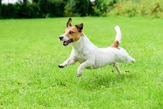
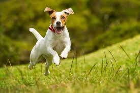
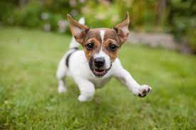
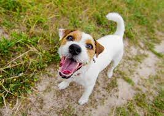
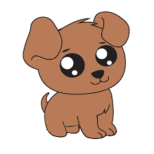
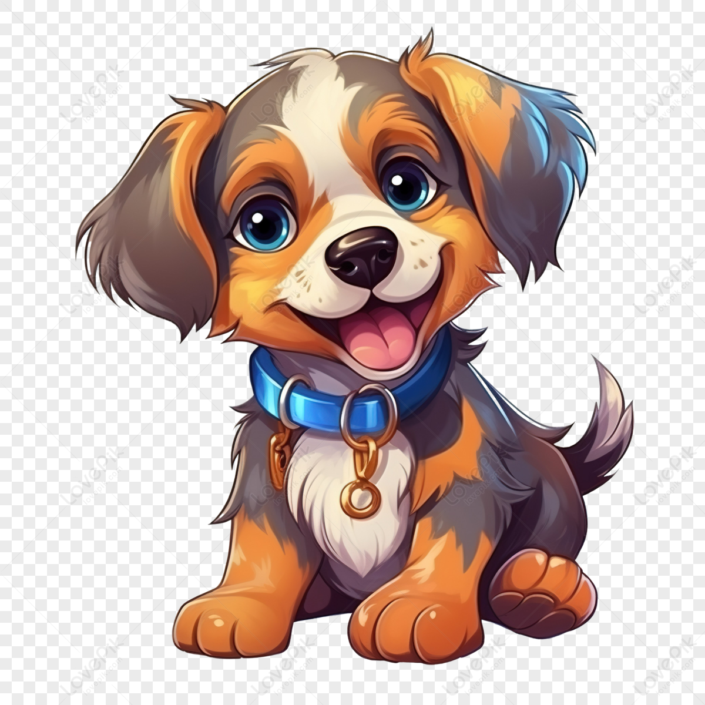
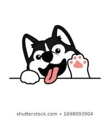
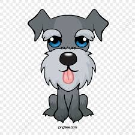

=*=*=*=*=*=*=*=*=*=*=*=*=*=*=*=*=*=*=*=*=*=*=*=*=*=*=*=
Sobre
Os cães, no Brasil também chamados de cachorro, são mamíferos carnívoros da família dos canídeos, subespécie do lobo, e talvez o mais antigo animal domesticado pelo ser humano. Teorias postulam que surgiu do lobo cinzento no continente asiático há mais de 100000 anos.
=*=*=*=*=*=*=*=*=*=*=*=*=*=*=*=*=*=*=*=*=*=*=*=*=*=*=*=
Raças
A seguir, uma tabela com as 15 raças de cachorros mais famosas.
| Posição | Raça | Porte | Temperamento |
|---|---|---|---|
| 1º | Labrador Retriever | Grande | Amigável, inteligente, leal |
| 2º | Golden Retriever | Grande | Afetuoso, dócil, sociável |
| 3º | Pastor Alemão | Grande | Protetor, corajoso, obediente |
| 4º | Poodle | Pequeno/Médio/Grande | Inteligente, brincalhão, alerta |
| 5º | Bulldog Francês | Pequeno | Carinhoso, brincalhão, sociável |
| 6º | Bulldog Inglês | Médio | Calmo, teimoso, carinhoso |
| 7º | Dachshund (Salsicha) | Pequeno | Curioso, corajoso, brincalhão |
| 8º | Beagle | Médio | Curioso, extrovertido, teimoso |
| 9º | Rottweiler | Grande | Protetor, leal, confiante |
| 10º | Shih Tzu | Pequeno | Sociável, afetuoso, tranquilo |
| 11º | Husky Siberiano | Grande | Independente, energético, amigável |
| 12º | Boxer | Grande | Leal, energético, protetor |
| 13º | Border Collie | Médio | Extremamente inteligente, ágil |
| 14º | Chihuahua | Pequeno | Ousado, alerta, afetuoso |
| 15º | Pug | Pequeno | Brincalhão, dócil, carinhoso |
=*=*=*=*=*=*=*=*=*=*=*=*=*=*=*=*=*=*=*=*=*=*=*=*=*=*=*=
Galeria dos Doguinhos Bonitinhos




=*=*=*=*=*=*=*=*=*=*=*=*=*=*=*=*=*=*=*=*=*=*=*=*=*=*=*=
Galeria dos Doguinhos Feinhos


=*=*=*=*=*=*=*=*=*=*=*=*=*=*=*=*=*=*=*=*=*=*=*=*=*=*=*=
*-* Vídeos fofos para vocês *-*



